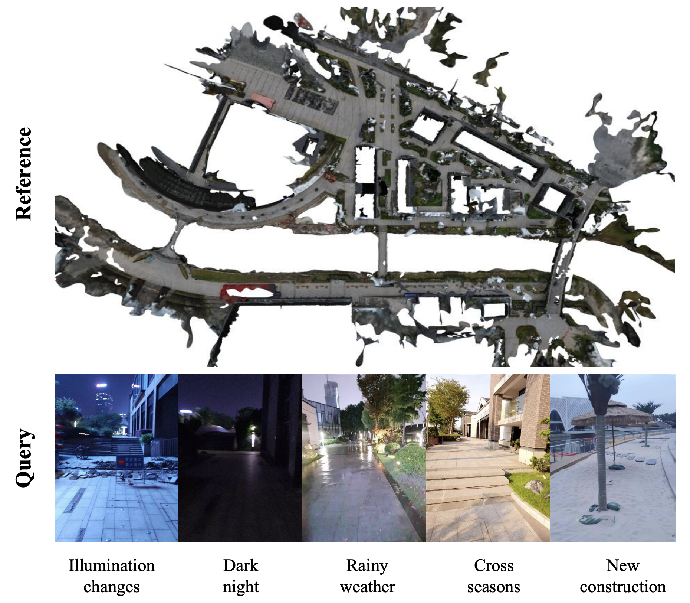

|
Long Wang I am a computer vision researcher at SenseTime Research, advised by Prof. Xiaowei Zhou. I received my master's degree from College of Computer Science and Technology at Zhejiang University in 2020, supervised by Prof. Weiwei Xu, and obtained my bachelor's degree from Xiamen University in 2016. My research interset lies in 3D Vision. Now I am seeking for a phd position. Email / CV / Transcript |

|
Publication |
|
|
Deep Active Contours for Real-time 6-DoF Object Tracking
Long Wang*, Shen Yan*, Jianan Zhen, Yu Liu, Maojun Zhang, Guofeng Zhang, Xiaowei Zhou ICCV, 2023 project page / paper DeepAC solves the problem of real-time 6-DoF object tracking from an RGB video with a CAD model on mobile device. |
|

|
Long-term Visual Localization with Mobile Sensors
Shen Yan, Yu Liu, Long Wang, Zehong Shen, Zhen Peng, Haomin Liu, Maojun Zhang, Guofeng Zhang, Xiaowei Zhou CVPR, 2023 project page / arXiv We propose to leverage additional sensors on a mobile phone, mainly GPS, compass, and gravity sensor, to solve huge appearance disparity between query and reference images caused by illumination in Visual Localization. |
Project |
|
|
Optimization-based Real-time 6-DoF Object Tracking on Mobile Device
My works at Huawei, 2020-2021 I mainly focused on optimization-based methods at Huawei. To handle extreme conditions, such as textureless, symmetric, and fast movement, our approach integrated multiple handcrafted features, including region, edge, and keypoint. |
|
|
Dynamic Human Reconstruction and Tracking from a Monocular RGB-D Video
Master's thesis, 2018-2019 My master's thesis mainly focused on capturing and reconstructing non-rigid human motion from a single-depth camera. Inspired by DoubleFusion, I built a system that not only tracks the motion of the human skeleton but also recovers the detail of the human surface. My work included GUI(using OpenGL), data processing(from KinectV2), motion field construction(combined SMPL and Embedded Node Graph), acceleration of derivative calculation(by CUDA), and dynamic volumetric fusion, etc. To improve the robustness and efficiency of our system, I employed a two-step tracking strategy with multi-part dynamic thresholds. Additionally, I implemented CUDA acceleration on an NVIDIA 1080Ti GPU, resulting in 70ms per frame. |
|
Thanks for the template provided by Jon Barron. |